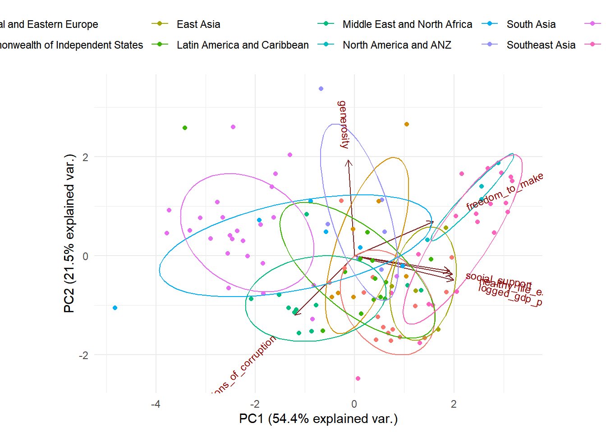

Instead of using linear regression on the model, we want to see whether other models will can help us predict the happiness score. In this case, we adapt principle component analysis and principle component regression to predict the ladder score at 2021, and compare our pcr model with our regression model to see which one performs the best.
First we filter the data from 2021 and all the predictors we are going to use to compute the principle components.
happy_meta <- read_csv("./Data/happiness.csv")## Rows: 1816 Columns: 10
## ── Column specification ────────────────────────────────────────────────────────────────────────
## Delimiter: ","
## chr (2): country_name, regional_indicator
## dbl (8): year, ladder_score, logged_gdp_per_capita, social_support, healthy_...
##
## ℹ Use `spec()` to retrieve the full column specification for this data.
## ℹ Specify the column types or set `show_col_types = FALSE` to quiet this message.happy21 <- happy_meta %>%
filter(year == 2021) %>%
select(-year)
head(happy21) %>% knitr::kable()| country_name | regional_indicator | ladder_score | logged_gdp_per_capita | social_support | healthy_life_expectancy | freedom_to_make_life_choices | generosity | perceptions_of_corruption |
|---|---|---|---|---|---|---|---|---|
| Afghanistan | South Asia | 2.523 | 7.695 | 0.463 | 52.493 | 0.382 | -0.102 | 0.924 |
| Albania | Central and Eastern Europe | 5.117 | 9.520 | 0.697 | 68.999 | 0.785 | -0.030 | 0.901 |
| Algeria | Middle East and North Africa | 4.887 | 9.342 | 0.802 | 66.005 | 0.480 | -0.067 | 0.752 |
| Argentina | Latin America and Caribbean | 5.929 | 9.962 | 0.898 | 69.000 | 0.828 | -0.182 | 0.834 |
| Armenia | Commonwealth of Independent States | 5.283 | 9.487 | 0.799 | 67.055 | 0.825 | -0.168 | 0.629 |
| Australia | North America and ANZ | 7.183 | 10.796 | 0.940 | 73.900 | 0.914 | 0.159 | 0.442 |
Secondly, we separate our data into a training set(75% of the observations), and a testing set(25% of the observations).
set.seed(1)
train_id <- sample(seq_len(nrow(happy21)), size = floor(0.75*nrow(happy21)))
train_set <- happy21[train_id,]
test_set <- happy21[-train_id,]Then we apply the training set to do the principle data analysis.
X <- model.matrix(ladder_score ~logged_gdp_per_capita + social_support + healthy_life_expectancy + freedom_to_make_life_choices + generosity +perceptions_of_corruption, data = train_set)[, -1]
happy_PCA <- prcomp(X, center = T, scale = T)
summary(happy_PCA)## Importance of components:
## PC1 PC2 PC3 PC4 PC5 PC6
## Standard deviation 1.8067 1.1347 0.7811 0.70345 0.48008 0.33580
## Proportion of Variance 0.5441 0.2146 0.1017 0.08247 0.03841 0.01879
## Cumulative Proportion 0.5441 0.7586 0.8603 0.94279 0.98121 1.00000plot(happy_PCA, main = "Scree Plot")From the scree plot and the summary of the PCA result, we see that three components will largely explain the variances in the data (86.03%). Let’s see the principal component scores for each principal.
happy_PCA$rotation## PC1 PC2 PC3 PC4
## logged_gdp_per_capita 0.50557942 -0.1963624 0.03593761 -0.29956544
## social_support 0.48591366 -0.1257005 -0.33392130 -0.09087997
## healthy_life_expectancy 0.50017876 -0.1503781 0.02985716 -0.29725350
## freedom_to_make_life_choices 0.40245817 0.2799679 -0.31503571 0.77439435
## generosity -0.03310161 0.7821098 -0.41124119 -0.45908163
## perceptions_of_corruption -0.30826981 -0.4826488 -0.78609591 -0.05656135
## PC5 PC6
## logged_gdp_per_capita 0.11097337 -0.77619921
## social_support -0.74850206 0.26090102
## healthy_life_expectancy 0.56834485 0.56119575
## freedom_to_make_life_choices 0.22964237 -0.08930672
## generosity 0.06841811 -0.05149951
## perceptions_of_corruption 0.21678801 -0.06226456Let’s visualize the results on a biplot.
biplot <- ggbiplot(happy_PCA,
obs.scale = 1,
var.scale = 1,
groups = train_set$regional_indicator,
ellipse = TRUE,
ellipse.prob = 0.60)
biplot <- biplot + scale_color_discrete(name = '')
biplot <- biplot + theme(legend.direction = 'horizontal',
legend.position = 'top')
biplot
The data points closer to each other in the plot have a similar data pattern. As we see the countries from the same region are relatively closer to each other, which means that they are similar in the pattern of the predictors. Furthermore, we can see that the predictors social support, healthy life expectation, and logged gdp per capita is highly positively correlated with each other (shown on the plot their vectors form very small angles with each other). The predictor freedom to make life choices is also relatively correlated with social support, healthy life expectation and logged gdp per capita. This might be a concern when we build our regression model.
Now we want to compute a principle component regression, and compare our pcr model with regression model to see which one is better at predicting the ladder score of 2021.
happy_pcr <- pcr(`ladder_score` ~ logged_gdp_per_capita + social_support + healthy_life_expectancy + freedom_to_make_life_choices + generosity +perceptions_of_corruption, data = train_set, scale = TRUE, validation = "CV")
summary(happy_pcr)## Data: X dimension: 111 6
## Y dimension: 111 1
## Fit method: svdpc
## Number of components considered: 6
##
## VALIDATION: RMSEP
## Cross-validated using 10 random segments.
## (Intercept) 1 comps 2 comps 3 comps 4 comps 5 comps 6 comps
## CV 1.095 0.4844 0.4880 0.4938 0.4972 0.5008 0.4971
## adjCV 1.095 0.4838 0.4872 0.4927 0.4959 0.4994 0.4953
##
## TRAINING: % variance explained
## 1 comps 2 comps 3 comps 4 comps 5 comps 6 comps
## X 54.40 75.86 86.03 94.28 98.12 100.00
## ladder_score 80.68 80.85 80.97 81.03 81.06 81.68validationplot(happy_pcr, main = "Test Error")When we look at the plot, we see that when we add one principal component, the test error will be the lowest. So we use one principle component to make predictions on the out of sample observations. Now we build our pcr model based on the optimal value \(k = 1\), and compute the test mse and train mse.
happy21_test<- predict(happy_pcr, newdata = test_set, ncomp = 1)
PCRTestMSE <- mean((happy21_test - test_set$`ladder_score`)^2)
PCRTestMSE## [1] 0.4701414The test MSE is about:0.47
happy21_train <- predict(happy_pcr, newdata = train_set, ncomp = 1)
PCRTrainMSE <- mean((happy21_train - train_set$`ladder_score`)^2)
PCRTrainMSE## [1] 0.2273465The train error is about: 0.23
We compare the train MSE and the test MSE with the best linear regression model we found previously by compute test MSE and train MSE for the linear regression model as well.
best_reg <- lm(ladder_score ~ regional_indicator + logged_gdp_per_capita + social_support + freedom_to_make_life_choices + logged_gdp_per_capita * freedom_to_make_life_choices, data = train_set)happy21_regtest<- predict(best_reg, newdata = test_set)
RegTestMSE <- mean((happy21_regtest - test_set$`ladder_score`)^2)
RegTestMSE## [1] 0.3817901The test MSE is about:0.38
happy21_regtrain<- predict(best_reg, newdata = train_set)
RegTrainMSE <- mean((happy21_regtrain - train_set$`ladder_score`)^2)
RegTrainMSE## [1] 0.1802655The train MSE is about:0.18
As a result, we conclude that in this scenario, the linear regression model we found earlier does a better job predicting the ladder score than the pcr regression.